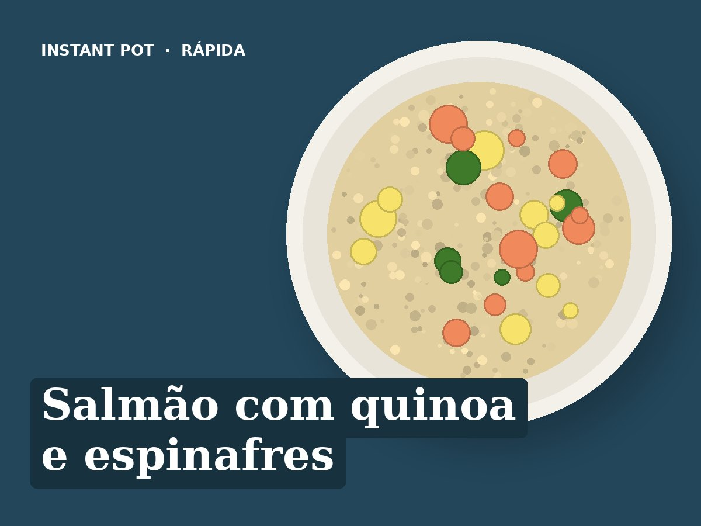

Salmão com quinoa e espinafres
Ingredientes
- 2 postas de salmão (frescas ou congeladas)
- 120 g de quinoa bem lavada
- 200 ml de água
- 80 g de espinafres
- Sumo de meio limão
- 1 colher de sopa de azeite
- Sal e pimenta q.b.
Preparação
- Pôr a quinoa, a água e uma pitada de sal na panela.
- Pôr o salmão por cima da quinoa, temperado com sal, pimenta e limão.
- Pressão alta, 2 minutos (salmão congelado: 4 minutos). Libertação natural 8 minutos.
- Retirar o salmão, juntar os espinafres e o azeite à quinoa e mexer. Servir com o salmão por cima.